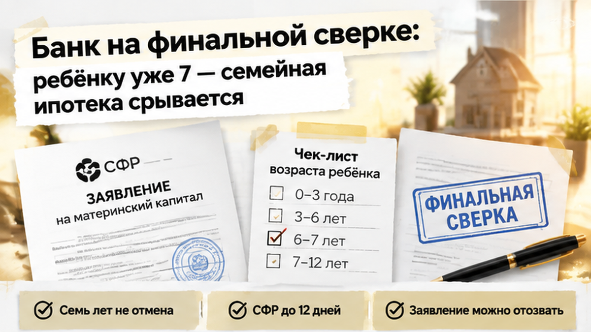
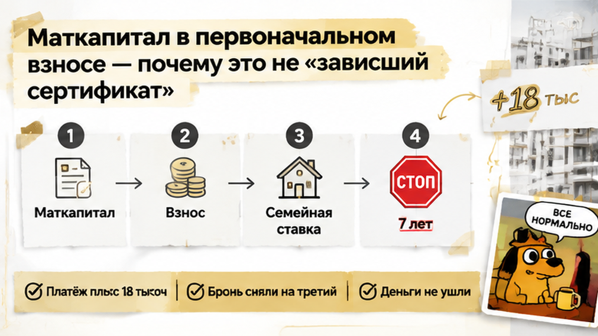
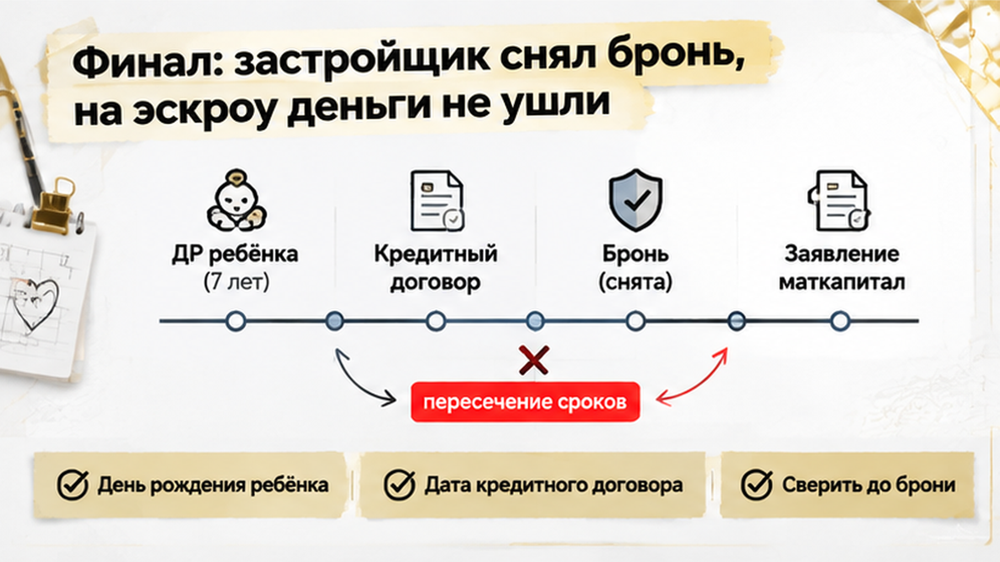

На финальной сверке банк смотрит не только на доходы родителей и документы на квартиру. Ему нужно ещё раз проверить, есть ли у семьи право именно на ту программу, по которой собираются подписывать кредитный договор.
И вот здесь обнаруживается главное: ребёнку уже исполнилось семь лет. Предварительное одобрение семья получила раньше, когда ему ещё было шесть, но этот ответ банка не «заморозил» возраст на удобной для покупателей дате.
Для семейной ипотеки важно, сколько ребёнку на день заключения кредитного договора. Не на дату заявки, не на день предварительного одобрения и не на момент бронирования двушки.
Для родителей такая разница кажется почти технической. Квартира выбрана, документы собраны, менеджер застройщика ждёт в офисе. В голове уже стоит галочка: «ипотеку одобрили».
Но банк видит другую последовательность. Сначала была предварительная оценка заявки, затем наступил день рождения ребёнка, а кредитный договор ещё не подписан. Значит, возрастное условие нужно проверять заново.
Это не та ситуация, когда банк просто пересмотрел ставку и предложил платить немного больше. Здесь исчезло основание для семейной ипотеки по ставке 6%: в семье один ребёнок без инвалидности, и ему уже семь.
Вариант для семей с двумя несовершеннолетними детьми тоже не подходит. В этой семье ребёнок один. А основание для покупки новостройки по такому сценарию в Тюмени дополнительно связано с перечнем из 35 регионов, куда Тюменская область не входит.
Поэтому просьба «оставьте нам прежнее одобрение, мы уже всё забронировали» не решает вопрос. Одобрение не заменяет кредитный договор и не обязывает банк открыть кредит и эскроу на условиях, которым семья больше не соответствует.
На финальном этапе банк приостанавливает выдачу кредита и открытие эскроу по семейной программе. Дальше остаётся считать запасной вариант: другую ипотеку, другой первоначальный взнос и другой ежемесячный платёж.

В первоначальном взносе у семьи были собственные деньги и маткапитал. Заявление на распоряжение сертификатом уже подали через банк, поэтому остановка ипотеки выглядела ещё тревожнее: если сделка не состоится, что будет с этими деньгами?
Здесь важно разделить две истории. Возраст ребёнка оказался критичным для семейной ипотеки, но седьмой день рождения сам по себе не отменяет право на маткапитал.
Маткапитал можно направить на первоначальный взнос по ипотеке сразу после рождения ребёнка. Ограничение «до 6 лет включительно» относится к основанию для льготного кредита, а не к самому сертификату и не к возможности использовать его для покупки жилья.
В этой сделке проблема возникла в другом: льготный кредит на прежних условиях не заключается. Поэтому заявление, поданное под конкретную ипотечную покупку, может быть отозвано или остаться неисполненным. Это не означает, что сертификат исчез или деньги сгорели.
У заявления есть собственный календарь. Социальный фонд рассматривает его до пяти рабочих дней, а если потребуются межведомственные запросы — до двенадцати. После решения на перечисление средств отводится ещё пять рабочих дней.
Подача заявления через банк не превращает этот процесс в мгновенный перевод. Поэтому нужно отдельно узнать, на каком этапе находится заявление: документы отправлены, решение принято или деньги уже перечислены. Сам факт подачи ещё ничего из этого не подтверждает.

Если пересчитать покупку без маткапитала в первоначальном взносе, меняется не только размер будущего платежа. Собственных накоплений может не хватить для входа в сделку: по семейной программе первоначальный взнос начинается от 20%, а требования к запасному кредиту нужно уточнять отдельно.
И здесь легко сделать неверный вывод: раз одна сделка остановилась, значит, маткапитал больше нельзя использовать после семилетия ребёнка. Нет. Нужно разбирать два вопроса отдельно: что произойдёт с уже поданным заявлением и из каких денег теперь складывается первоначальный взнос.
Сертификат не «завис» из-за дня рождения. Просто прежняя схема покупки распалась, и семье пришлось решать, готова ли она продолжать сделку на новых условиях.